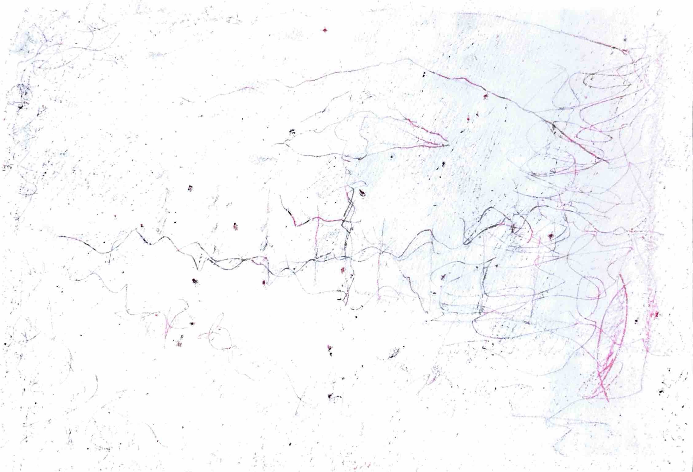

Music / Writing / Drawing / Thought
生成の
無垢へと
音楽をしたり、文章を書いたり、絵を描いたり。
考えたことを、そのまま置いておくための場所。
01 — About
山﨑圭智
幼い頃から、音楽に親しんできました。
年を経るにつれて、哲学や思想、文学にも触れ、この情報に溢れる世界の中、押し流されつつも、自分なりにこれらを愛してきました。
現在は、福祉や教育に関わる職業に就いています。
形而上的な価値としてではなく、人の営みとしての藝術全般に惹かれています。
また、それらを営む人生そのものにも。
そして、いくつかの問いを抱えています。
「詩」はどこからやってくるのか。
人間が現にあるがままで、存在を肯定される社会や教育はいかに可能か。
バックミンスター＝フラー、ニーチェ、折口信夫、フーコー、ドゥルーズ、ジョン・ケージなど、多くの先人の見た景色を見たいと思っています。
このサイトは、拡散し、分からなくなっていく自分を、一つのプラットフォームで提示してみようと思ったことから始まりました。
音楽、文章、絵、思想。
これらがどこからやってくるのかを考えながら、僕自身もまた、つくり、考え、変わっていく。
私自身が生成するのと同じように、このサイトも生成していくと思います。
02 — Works